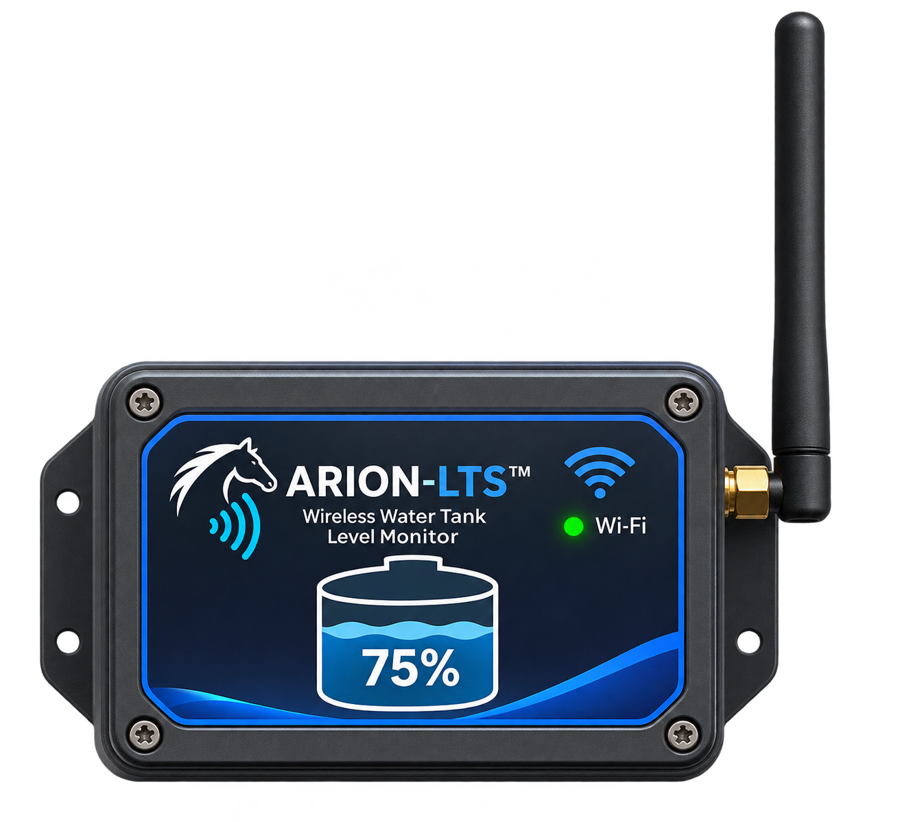

Percentage-based display
Check your tank's estimated water level as a familiar 0–100% reading.
ARION-LTS is a wireless monitoring system designed to make checking stored water levels simple. View an easy-to-read percentage on a local Wi-Fi dashboard—without climbing up to inspect the tank.

Illustrative product conceptA clear view of your water supply, designed around the practical needs of homes and properties with storage tanks.
Check your tank's estimated water level as a familiar 0–100% reading.
A dedicated wireless transmitter sends readings to the indoor receiver.
View your water-level gauge from a compatible device on the same local network.
The ARION-LTS dashboard prioritizes a large percentage gauge so water levels can be understood quickly. The illustration shows a sample reading, not a live device connection.
The tank-mounted sensing system determines the water-level reading.
A wireless transmitter sends the measurement to the ARION-LTS receiver.
The receiver presents the water level through its local Wi-Fi dashboard.
Integration with Samsung SmartThings for remote monitoring is under development and is not currently advertised as an available product feature. Compatibility and regional availability remain subject to testing and platform requirements.